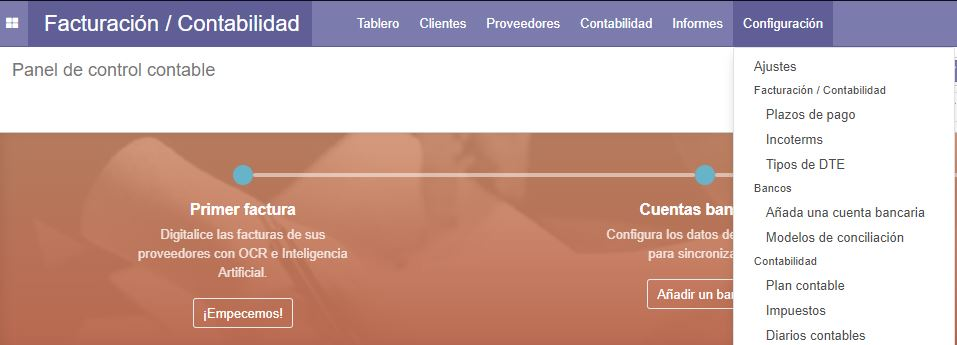
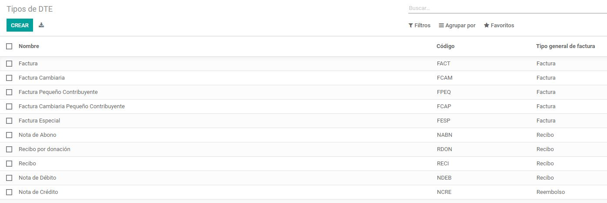
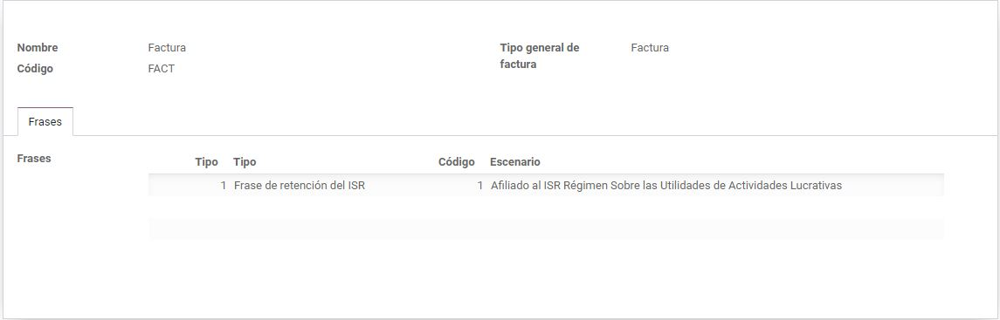
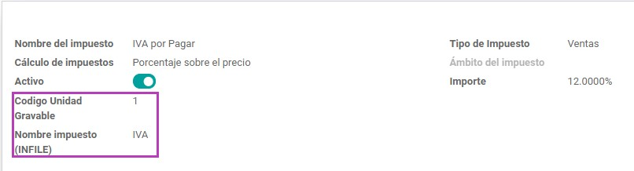
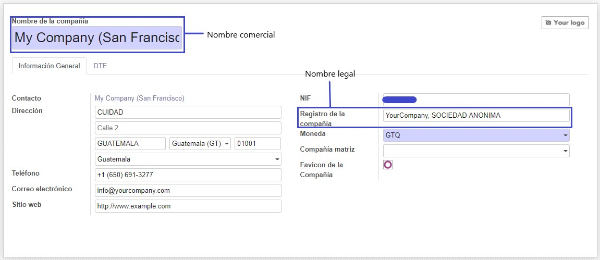
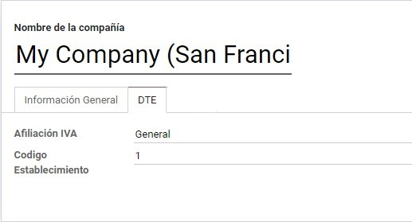

Tipos de DTE
Se añade un nuevo menú para acceder a la lista de los tipos de DTE.

Dentro de esta vista se debe editar cada tipo de DTE utilizable por la empresa con las frases necesarias para
cada uno.


Impuestos
Se debe editar cada impuesto que se vaya a utilizar con los campos requeridos por la SAT.

Compañía
Dentro de cada compañía se deben agregar la información fiscal en la pestaña "Información General". Además, se
deben llenar los campos en la pestaña "DTE" (Afiliación IVA y Codigo Establecimiento).

